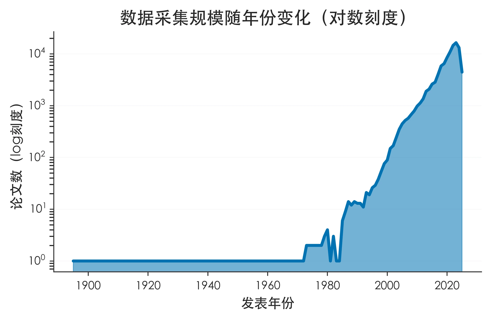
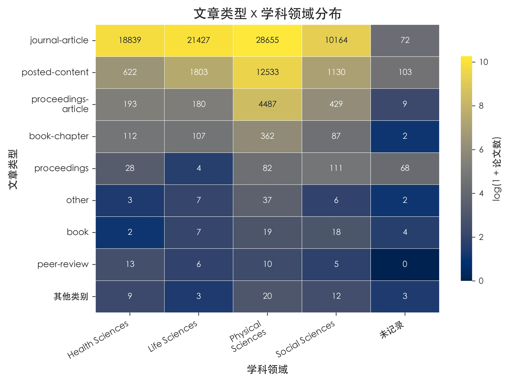
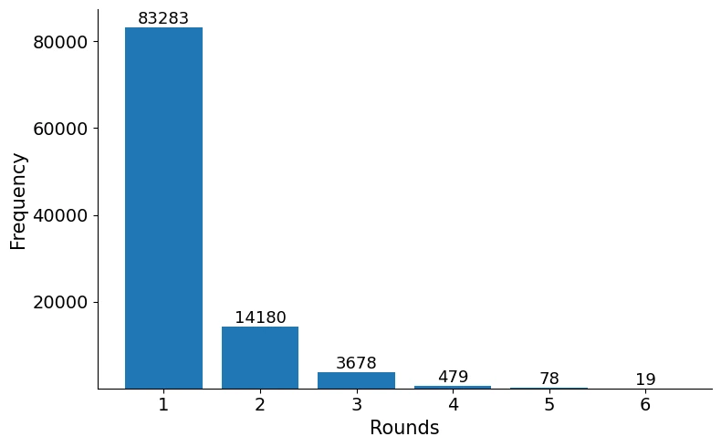
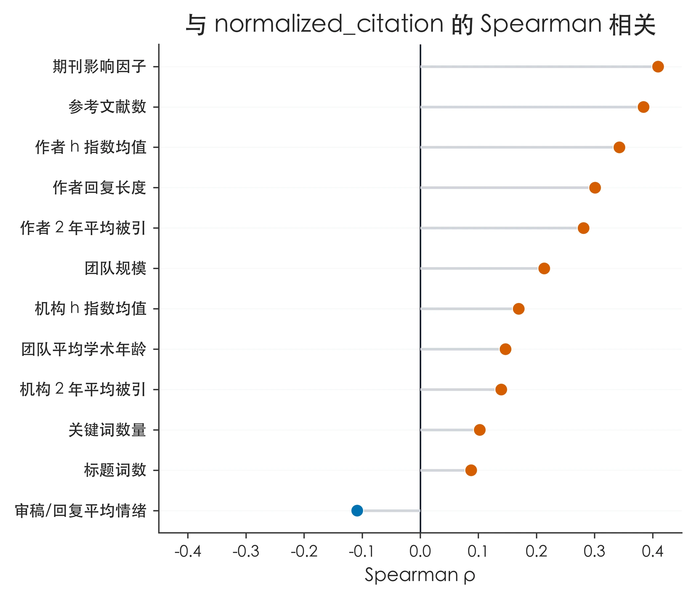

CHAPTER 01
引言
研究背景、研究问题与研究意义。
本研究整合 10 万余条开放同行评议关联记录，从论文、作者机构和评审过程三个层面分析高水平论文的关联特征，并分别构建高被引与高颠覆性论文预测模型。
由数据构建和特征工程逐步进入描述性分析、变量相关性分析、预测建模和项目成果。
研究背景、研究问题与研究意义。
整合 PubPeer、F1000Research、OpenReview、Nature Communications 与 QSS，并用 OpenAlex 补充元数据。
从论文本身、作者及机构、同行评议过程三个层面构建特征体系。
呈现样本结构、结果变量、评审轮次、情感和文本长度分布。
比较高被引与高颠覆性论文在知识网络、声誉、团队和评审过程上的关联差异。
预测标准化被引 Top10 与颠覆性 Top10，并分析关键特征。
主要研究结论、贡献与局限性。
数据集、代码、图表与模型成果。
图表编号依照 ZIP 交付清单的 deliverable_order，并按清单中的 chapter 字段归入对应章节。



